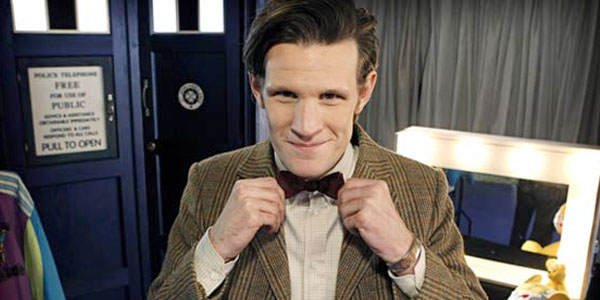

About the Eleventh Doctor:
The Doctor is a centuries-old alien Time Lord from the planet Gallifrey, who travels in time and space in the TARDIS, frequently with companions. At the end of life, the Doctor regenerates; as a result, the physical appearance and personality of the Doctor changes.
The Eleventh Doctor, Matt Smith with his signature costume, bow tie!
Eleven's Personality:
- Old man trapped in a young man's body
- Bow tie
- Fez
The Doctor's Companions:

The Doctor always travels with human companions!
Click on the links below to learn about some of his companions: